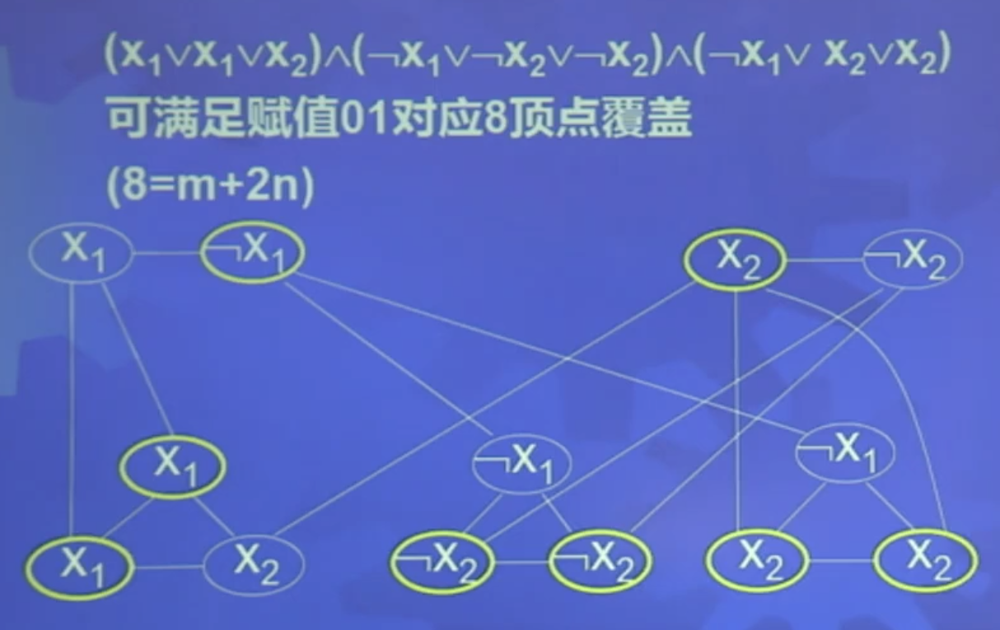
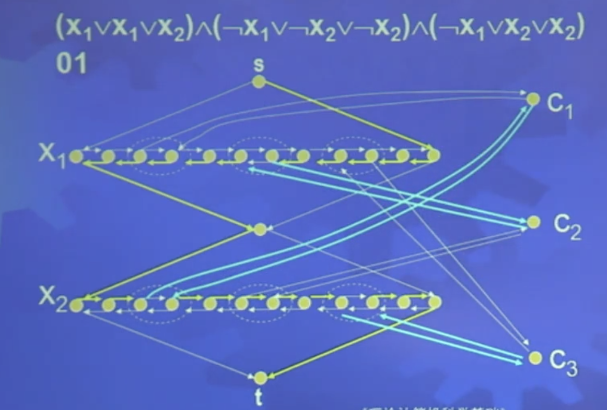
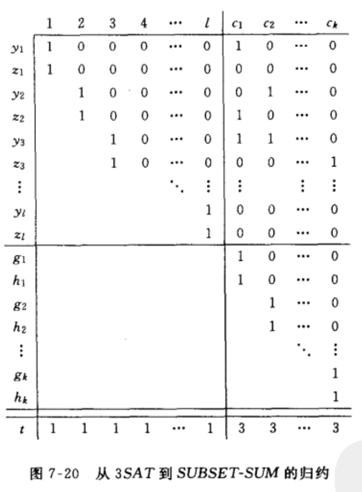

相关概念
NP 完全：
- NP 中的每个语言 A 都多项式时间规约到 B，则 B 是 NP 难的。
- 同时，如果 B 是 NP 问题，且 B 是 NP 完全的。
定理8.28：如果 B 是 NP 完全的，并且 B 属于 P，NP = P。
定理8.29：如果 B 是 NP 完全的，B 多项式时间规约到 C，C 属于 NP，则 C 是 NP 完全的。
推论：cnf-SAT、SAT、3SAT 是 NP 完全的
库克定理：
NP 完全问题
顶点覆盖：任何一条边至少有一个端点属于这组顶点
顶点覆盖问题：VERTEX-COVER无向图 G 有 k 个顶点覆盖
定理8.34：VERTEX-COVER 是 NP 完全的
思路：将 3SAT 规约到 VERTEX-COVER。
证明：分为两部分，首先将子句变为团（下部）。然后每个文字和其反构成团（上部）。连接上下部相同的变元。

规约过程：构造、正确性证明、复杂性分析
哈密顿路径问题：HAMPATH有向图G有从s到t的哈密顿路径
定理8.35：HAMPATH 是 NP 完全的
证明：根据文字构造如图结构，每个文字有一行节点，节点包含两个端点，每个子句添加一对节点，每对节点添加一个间隔节点。节点之间分别有一条左向和右项的路径，代表该文字的真假。
每两个文字之间也用一个节点隔开，节点和子句的两个端点相连。
然后，为每个子句添加一个节点，该节点依照其正负情况连入每个问题中与其对应的一对节点中，使得方向和其正负相同。

子集和问题：SUBSET-SUMS中取出一个集合和为t
定理8.37：SUBSET-SUM 是 NP 完全的
证明：

左侧一列代表集合中的物品，最下方一行代表最终要得到的 t，对于前 l 列，代表不同的文字，右面 k 个代表 k 个子句。每一对 y、z 分别对应相对应问题的真和假，将对应的文字赋值为 1，如果子句中包含相关文字，则该行值也为 1。然后，在每个子句下方添加两个1。
对于每个文字，其值为真或假，所以对应的 t 中的值如果为 1 可以保证不冲突。对于每个子句，只要有一个变量满足即可，因此只需要使对应的 t 为 3 即可，此时意味子句中至少有一个文字为真。因此 3SAT 问题规约到子集和问题。